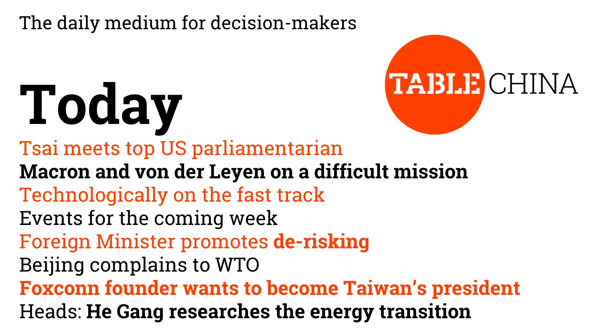

Heads: He Gang researches the energy transition

Summary
I had the pleasure to talk with Clemens Ruben of Table.Media about my experiences and research, and below is a story that out of our conversations. Read the original article.
Archieve
When He Gang was accepted to study geography at the prestigious Peking University, he was working in construction. His father, a small farmer in Hunan province, had died two years earlier. So He Gang had to lend a hand to support the family. Originally, he did not know much about geography as a subject, says He Gang, now an Assistant Professor in the Department of Technology and Society at Stony Brook University in New York. But he could not just pass up a place at one of the best universities in the US.
During his studies, He Gang discovered his passion for geography because it allowed him to develop a systematic view of the big picture and to learn about different regions and people in China during field research. During a project in southwestern China, he experienced the consequences of climate change up close for the first time: increased rainfall and deforestation mean that the thin layer of topsoil is not just literally flowing away from under the feet of local mountain farmers – and with it their livelihood.
Commitment to climate protection
In 2005, He Gang attends the UN Climate Change Conference COP 11 in Montreal as a Chinese youth delegate, a formative event. Afterward, he begins to get involved in climate issues. With fellow students, he founds the first student climate club at Peking University, which works to increase environmental awareness among students and make the campus greener, among other things. And he decides to pursue a master’s degree in “Climate and Society” at Columbia University in the US, followed by research work in the “Energy and Sustainable Development” program at Stanford University and a doctorate in “Energy and Resources” in 2015 at Berkeley University. Meanwhile, He Gang’s research focuses on energy and climate policy. The Chinese economy is supposed to become climate neutral by 2060, but energy security is always an important requirement for the Chinese government, the scientist explains. This is the reason for the contradictory phenomenon that China strongly promotes the expansion of renewable energies but, at the same time, continues to build new coal-fired power plants on a large scale, which are considered to be particularly reliable.
Solar panel study
In his latest research project, He Gang examined how the globalized market for solar panels positively affects their selling prices. The result: compared to relocating production to Germany, German buyers of solar panels saved about 6.5 billion euros between 2008 and 2020. There are concerns about buying Chinese photovoltaic systems with regard to jobs, human rights, and the high level of dependency. But this is offset by the enormous additional financial costs of relocating production, explains He Gang. Politicians have to weigh the options carefully.
Overall, the climate researcher is cautiously optimistic: Renewable energies are now at the beginning of exponential growth, he says, and last year more money was invested in renewable than fossil energies worldwide for the first time. “This won’t save the world in which we live now, but it will help prevent the worst,” He Gang sums up. –Clemens Ruben